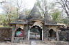
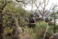
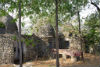
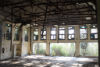

<!DOCTYPE html>
<html lang="en"></html>
<head>
  <meta charset="UTF-8"/>
  <title>Week 5 Project</title>
  <link rel="stylesheet" href="../assets/styleSheets/styles.css"/>
  <link rel="stylesheet" href="fancybox/jquery.fancybox.css"/>
  <link href="http://fonts.googleapis.com/css?family=Roboto:400,500,900" rel="stylesheet" type="text/css"/>
</head>
<body>
  <div class="container clearfix">
    <div class="gallery">
      <h1>The "Beatles Ashram". Rishikesh, India</h1>
      <div class="previews"><a value="1" href="#" data-full="assets/images/India/image1Large.jpg" data-info="The front gates to the ashram. It was abandoned in 1997 and it is now slowing being consumed by forest. Inside you will find the shells of many buildings, meditation cells and lecture halls. Technically the ashram is closed to the public, but 50 rupees will get you anything in India" data-zoom-image="assets/images/aIndia/image1Large.jpg"></a><a value="2" href="#" data-full="assets/images/India/image2Large.jpg" data-info="Here you can see the transcendental meditation cells and their beautiful view of the Ganges" data-zoom-image="assets/images/India/image2Large.jpg"></a><a value="3" href="#" data-full="assets/images/India/image3Large.jpg" data-info="The meditation chambers of George, Paul, John and Ringo - as seen in the photo from left to right" data-zoom-image="assets/images/India/image3Large.jpg"></a><a value="4" href="#" data-full="assets/images/India/image4Large.jpg" data-info="One of the main lecture halls. Shortly after these photos were taken, an artist turned this space into what is now known as the Beatles Cathedral Gallery. The walls are now covered with his paintings which include many great spiritual leaders from Gandhi to Mother Teresa" data-zoom-image="assets/images/India/image4Large.jpg"></a><a value="5" href="#" data-full="assets/images/India/image5Large.jpg" data-info="Graffiti, art installations, and giant murals can be found in many rooms throughout the ashram, creating an interesting contrast between the decrepit decaying buildings and their brilliant colors" data-zoom-image="assets/images/India/image5Large.jpg"></a></div>
      <div class="mainImage"><a href="" class="fancyImage"></a>
      </div>
      <div class="placeholder">
        <h3>In February 1968, the Beatles traveled to the Maharishi Mahesh Yogi ashram in Rishikesh, India. There they attend an advanced Transcendental Meditation training session. It is said that many of the songs in the White album came out of their time here. Click on the images to the left to get a closer look.  </h3>
      </div>
      <div class="textbox">
        <p></p>
      </div>
    </div>
    <div class="switchHolder">
      <div class="greyBackground">
        <div class="greyScaleSwitch"></div>
        <div class="gsSlider">
          <form>
            <input id="slider" type="range" min="0" max="100" step="1" value="0"/>
          </form>
        </div>
      </div><!-- <p class="note">Current value: <span id="currentValue">0</span></p> -->
      <div class="sepiaBackground">
        <div class="sepiaSwitch"></div>
        <div class="sepSlider">
          <form>
            <input id="sepSlider" type="range" min="0" max="100" step="1" value="0"/>
          </form>
        </div>
      </div>
      <div class="saturationBackground">
        <div class="saturationSwitch"></div>
        <div class="satSlider">
          <form>
            <input id="satSlider" type="range" min="0" max="100" step="1" value="0"/>
          </form>
        </div>
      </div>
    </div>
  </div>
</body>
<script src="http://ajax.googleapis.com/ajax/libs/jquery/1.10.2/jquery.min.js"></script>
<script src="fancybox/jquery.fancybox.js?v=2.1.4"></script>
<script src="jquery.mlens-1.4.min.js"></script>
<script>
  $(function(){
  
  
   $('.previews a').on('click',function(e){
    e.preventDefault();
    $('.mainImage').css("opacity", 1)
    var biggerPicture = $(this).data('full');
    $('.mainImage img').attr('src',biggerPicture);
    $('.placeholder').css("display", "none");
    //- $('.textbox').css("opacity", 1);
    //- $('.textbox').css("margin-left", 28%);
    //- var zoomPicture = $(this).data('zoom-image');
    //- $('.mainImage img').attr('data-zoom-image',zoomPicture);
    //- $('.mainImage img').imageLens({ lensSize: 200 })
    $(this).fadeTo( "slow", 0.33 );
    $('p').html($(this).data('info'));
    $('.fancyImage').attr('href', biggerPicture);
   });
   $('.fancyImage').fancybox();
  //-clear switch code
  
   //- $('.mainImage img').removeClass('greyScaleFilter');
   //- $('.mainImage img').removeClass('sepiaFilter');
   //- $('.mainImage img').removeClass('saturationFilter');
   
  //- greyscale switch code
  
   var gsState = false
   var currentValue = $('#currentValue');
   
   $('.greyScaleSwitch').on('click', function(){
    if (gsState === false){
     $('.gsSlider').fadeIn();
     gsState = true
     console.log('gstrue')
     $(this).css('background-color', 'rgba(140,140,140,1)')
    $('#slider').change(function(){
     currentValue.html(this.value);
     if (this.value == 0 && gsState === true){
      $('.mainImage img').removeClass('greyScaleFilterMin');
      $('.mainImage img').removeClass('greyScaleFilterMid');
      $('.mainImage img').removeClass('greyScaleFilterMax');
     } else if (this.value >= 10 && this.value <=30 && gsState === true){
      $('.mainImage img').addClass('greyScaleFilterMin');
      $('.mainImage img').removeClass('greyScaleFilterMid');
      $('.mainImage img').removeClass('greyScaleFilterMax');
      console.log('heyo');
     } else if (this.value >= 40 && this.value <=80 && gsState === true){
      $('.mainImage img').addClass('greyScaleFilterMid');
      $('.mainImage img').removeClass('greyScaleFilterMax');
      }
     else if(this.value >= 90 && gsState === true){
     $('.mainImage img').addClass('greyScaleFilterMax');
     }
    });
    
    } else {
     $('.greyScaleSwitch').css('background-color', 'rgba(255,255,255,0.2)');
     gsState = false;
     $('.gsSlider').fadeOut(100);
     console.log('gsfalse');
     this.value = 0;
     $('.mainImage img').removeClass('greyScaleFilterMin');
     $('.mainImage img').removeClass('greyScaleFilterMid');
     $('.mainImage img').removeClass('greyScaleFilterMax');
    }
    });
    
    
    
    
    
   //- sepia switch code
   
    var sepState = false
    var currentValue = $('#currentValue');
    
    $('.sepiaSwitch').on('click', function(){
     if (sepState === false){
      $('.sepSlider').fadeIn();
      sepState = true
      console.log('septrue')
      $(this).css('background-color', 'rgba(184,164,128,1)')
     $('#sepSlider').change(function(){
      currentValue.html(this.value);
      if (this.value == 0 && sepState === true){
       $('.mainImage img').removeClass('sepiaFilterMin');
       $('.mainImage img').removeClass('sepiaFilterMid');
       $('.mainImage img').removeClass('sepiaFilterMax');
      } else if (this.value >= 10 && this.value <=30 && sepState === true){
       $('.mainImage img').addClass('sepiaFilterMin');
       $('.mainImage img').removeClass('sepiaFilterMid');
       $('.mainImage img').removeClass('sepiaFilterMax');
       console.log('heyo');
      } else if (this.value >= 40 && this.value <=80 && sepState === true){
       $('.mainImage img').addClass('sepiaFilterMid');
       $('.mainImage img').removeClass('sepiaFilterMax');
       }
      else if(this.value >= 90 && sepState === true){
      $('.mainImage img').addClass('sepiaFilterMax');
      }
     });
     
     } else {
      $('.sepiaSwitch').css('background-color', 'rgba(255,255,255,0.2)');
      sepState = false;
      $('.sepSlider').fadeOut(100);
      console.log('sepfalse');
      this.value = 0;
      $('.mainImage img').removeClass('sepiaFilterMin');
      $('.mainImage img').removeClass('sepiaFilterMid');
      $('.mainImage img').removeClass('sepiaFilterMax');
     }
     });	
     
     
     
    //- saturation switch code
    
     var satState = false
     var currentValue = $('#currentValue');
     
     $('.saturationSwitch').on('click', function(){
      if (satState === false){
       $('.satSlider').fadeIn();
       satState = true
       console.log('sattrue')
       $(this).css('background-color', 'rgba(255,20,0,1)')
      $('#satSlider').change(function(){
       currentValue.html(this.value);
       if (this.value == 0 && satState === true){
        $('.mainImage img').removeClass('satFilterMin');
        $('.mainImage img').removeClass('satFilterMid');
        $('.mainImage img').removeClass('satFilterMax');
       } else if (this.value >= 10 && this.value <=30 && satState === true){
        $('.mainImage img').addClass('satFilterMin');
        $('.mainImage img').removeClass('satFilterMid');
        $('.mainImage img').removeClass('satFilterMax');
        console.log('heyo');
       } else if (this.value >= 40 && this.value <=80 && satState === true){
        $('.mainImage img').addClass('satFilterMid');
        $('.mainImage img').removeClass('satFilterMax');
        }
       else if(this.value >= 90 && satState === true){
       $('.mainImage img').addClass('satFilterMax');
       }
      });
      
      } else {
       $('.saturationSwitch').css('background-color', 'rgba(255,255,255,0.2)');
       satState = false;
       $('.satSlider').fadeOut(100);
       console.log('satfalse');
       this.value = 0;
       $('.mainImage img').removeClass('satFilterMin');
       $('.mainImage img').removeClass('satFilterMid');
       $('.mainImage img').removeClass('satFilterMax');
      }
      });	
      
   //- //colourfilter stuff
   //- $('.normalSwitch').on('click', function(){
   //- console.log('test');
   //- 	$('.mainImage img').removeClass('greyScaleFilter');
   //- 	$('.mainImage img').removeClass('sepiaFilter');
   //- 	$('.mainImage img').removeClass('saturationFilter');
   
   //- }); 
   
   //- $('.greyScaleSwitch').on('click', function(){
   //- console.log('test');
   //- 	$('.mainImage img').addClass('greyScaleFilter');
   //- 	$('.mainImage img').removeClass('sepiaFilter');
   //- 	$('.mainImage img').removeClass('saturationFilter');
   //- }); 
   
   //- $('.sepiaSwitch').on('click', function(){
   //- console.log('test');
   //- 	$('.mainImage img').addClass('sepiaFilter');
   //- 	$('.mainImage img').removeClass('saturationFilter');
   //- 	$('.mainImage img').removeClass('greyScaleFilter');
   //- }); 
   
   //- $('.saturationSwitch').on('click', function(){
   //- console.log('test');
   //- 	$('.mainImage img').addClass('saturationFilter');
   //- 	$('.mainImage img').removeClass('sepiaFilter');
   //- 	$('.mainImage img').removeClass('greyScaleFilter');
   //- }); 
   
   
  });
  
  
</script>